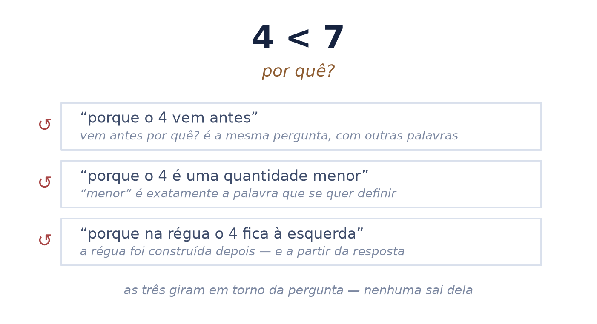
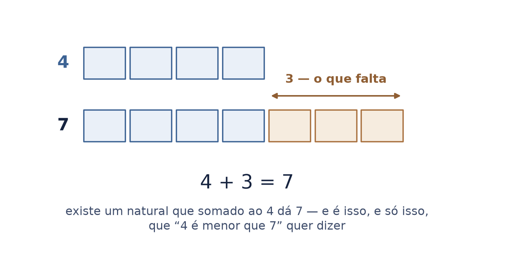
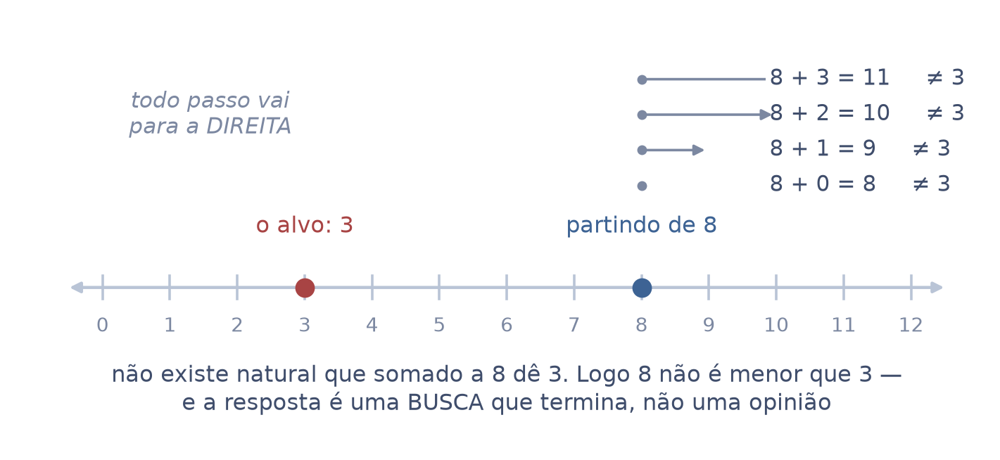
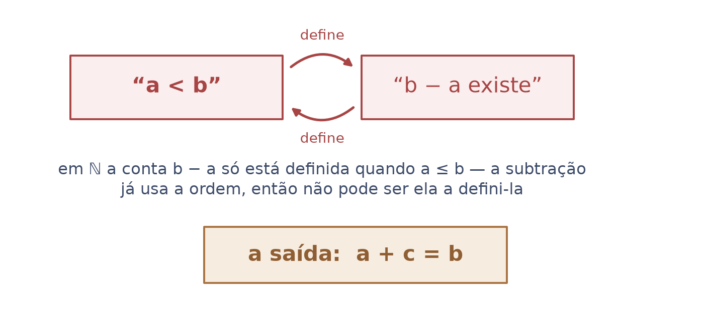
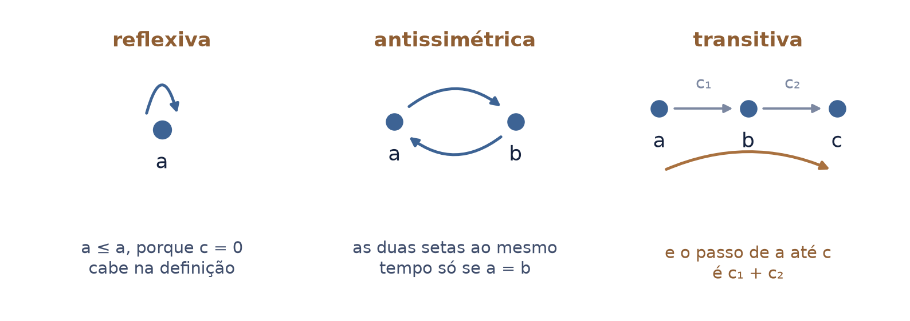
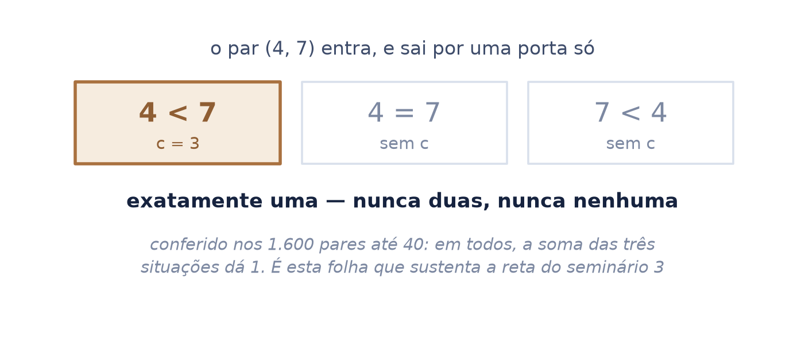
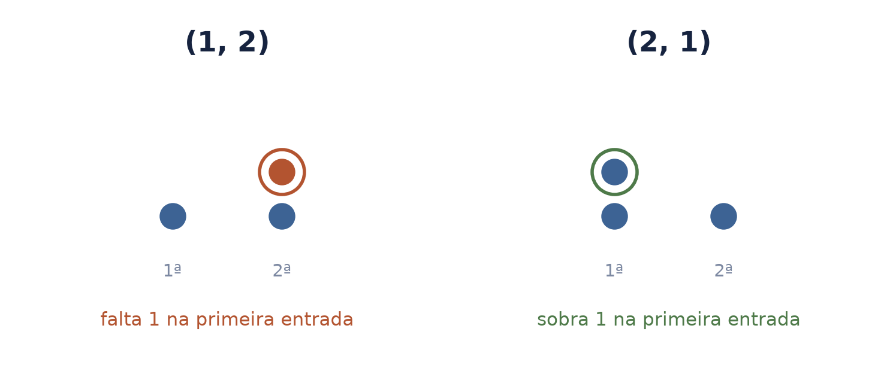
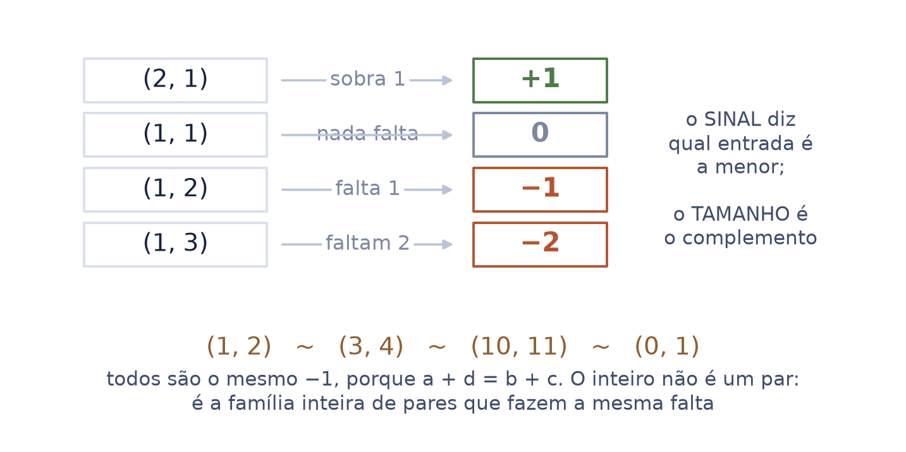
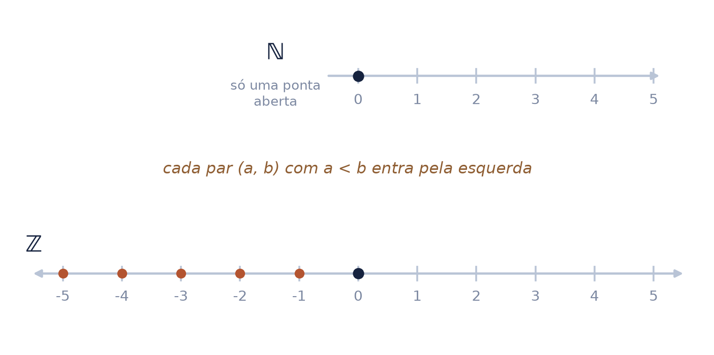
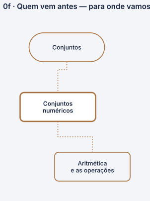

“maior” não é uma impressão: é uma conta — e o que sobra dela é o número negativo
Pergunte a alguém por que 4 é menor que 7. Quase ninguém responde. Não por ignorância: porque a escola nunca deu a resposta — deu a régua, que é onde ela já está usada.
Esta aula dá a resposta, mostra que ela é uma busca que termina, e depois usa a mesma resposta para fabricar o negativo. O seminário 3 vai receber a reta pronta, com o direito de desenhá-la.
Autor · Mateus Felipe Alkimim Pereira
Coautora · Sara Catiele Nogueira Pereira
Orientador · Rosivaldo Antônio Gohnan
| \(\mathbb{N}\) | lê-se “ene” — os números de contar, com o zero: 0, 1, 2, 3, … |
| \(\mathbb{Z}\) | lê-se “zê” — os inteiros. Nesta aula ele não é dado: é construído |
| \(a \le b\) | lê-se “\(a\) é menor ou igual a \(b\)”. É o sinal que esta aula define — até a folha 4 ele não tem significado |
| \(a < b\) | lê-se “\(a\) é menor que \(b\)” — o mesmo, com os dois diferentes: falta alguma coisa, e o que falta não é nada |
| \(a + c = b\) | lê-se “\(a\) mais \(c\) é igual a \(b\)”. É a soma do seminário 1, e é a única coisa que entra na definição |
| \((a,\, b)\) | lê-se “o par \(a\), \(b\)” — dois naturais numa ordem que importa. O par \((1,2)\) não é o par \((2,1)\) |
Do contar e da soma, e de mais nada. Não usa reta, não usa régua, não usa “tamanho” — todos os três são o que se quer justificar, e usá-los aqui seria andar em círculo.
O direito de desenhar a reta, que o seminário 3 recebe pronta, e o negativo como objeto construído — que o seminário 1 usa como convenção e nunca fabricou.
A pergunta parece boba, e não é. As respostas que vêm na hora têm todas o mesmo defeito: usam a palavra que se quer definir, ou apelam para um desenho que só existe depois da resposta.
Não é falha de quem responde. É que a resposta nunca foi ensinada — a escola entrega a fila já montada e pede que se ande nela.
“Se você perguntar à maioria das pessoas por que quatro é menor que sete, raramente alguém conseguiria te responder.”
ele disse isso no meio de épsilon-delta, porque precisou de \(4 < 7\) para justificar um passo. A pergunta elementar aparece dentro do conteúdo avançado — é o argumento inteiro desta fundação, dito por ele.

\(a \le b\) quando \(a\) e \(b\) são o mesmo número, ou quando existe um natural \(c\) tal que \(a + c = b\). Lê-se: “\(a\) é menor ou igual a \(b\) quando falta alguma coisa a \(a\) para virar \(b\)”.
Então \(4 < 7\) porque existe o \(3\), e \(4 + 3 = 7\). O \(3\) é o complemento: o que falta. A ordem não descreve tamanho — descreve o que falta.
“Um é menor que dois. E por que um é menor que dois? Porque existe um outro número natural que soma com um e dá dois. Doze é menor que dezoito. Por quê? Porque existe um número que soma a doze e dá dezoito. Número natural.”

Uma definição só vale se souber dizer não. Procure o natural que somado a \(8\) dá \(3\): some zero e dá 8, some um e dá 9, some dois e dá 10. Todo passo afasta.
Não há candidato. Logo \(8\) não é menor que \(3\) — e isso não é opinião nem hábito: é o resultado de uma busca que acaba.
“\(8\) é menor que \(3\)? Nos naturais, não. Por quê? Quem que você soma nos naturais com 8 e dá 3? Ninguém.”

A tentação é dizer: “\(4\) é menor que \(7\) porque \(7 - 4\) sobra \(3\)”. A frase é verdadeira e não pode ser a definição.
Nos naturais a subtração não é uma operação livre: \(b - a\) só está definida quando \(a\) já é menor ou igual a \(b\). Usá-la para definir a ordem é usar a ordem para definir a ordem.
por isso a definição é com mais. A soma existe para qualquer par de naturais, sem pedir licença a ninguém — e é a única operação disponível antes de haver ordem.
A versão com subtração volta a valer depois, quando os inteiros existirem. E quem os constrói é a definição desta aula.

Chamar uma relação de ordem não é escolha de nome: são três exigências, e a definição pela soma cumpre as três — cada uma se demonstra achando o complemento certo.
A transitiva é a mais bonita das três, porque o complemento se soma: se falta \(c_1\) para ir de \(a\) a \(b\), e \(c_2\) para ir de \(b\) a \(c\), então falta exatamente \(c_1 + c_2\) para ir de \(a\) a \(c\).
conferido em Python até 15: em todos os casos o complemento de \(a\) até \(c\) é a soma dos dois. A demonstração é o que se vê, e a conta confirma o que se vê.

Dados dois naturais, exatamente uma das três coisas acontece: o primeiro é menor, os dois são iguais, o segundo é menor. Nunca duas ao mesmo tempo, e nunca nenhuma.
Isso tem nome — tricotomia — e é o que autoriza pôr os números em fila. Uma relação sem ela deixaria pares incomparáveis, e a fila teria buracos.
“Dados dois números naturais, ou eles são iguais, ou o primeiro é menor que o segundo, ou o segundo é menor que o primeiro. Só isso pode acontecer.”

Tome dois naturais numa ordem que importa — o par \((a,\, b)\) — e pergunte à definição: qual dos dois é o menor, e quanto falta para ele alcançar o outro?
São duas informações, e nenhuma se perde. O par \((1,2)\) diz “a primeira entrada é a menor, e falta 1”. O par \((2,1)\) diz “a primeira é a maior, e sobra 1”.
é a mesma pergunta da folha 4, feita agora aos dois lados. Nada de novo entrou — só se passou a guardar de que lado ficou a falta.

Dê um nome a cada par. Se a primeira entrada é a menor, o nome leva um menos, e o tamanho é o complemento: \((1,2)\) é \(-1\), \((1,3)\) é \(-2\). Se é a maior, o nome é positivo. Se são iguais, é o zero.
E muitos pares dão o mesmo nome: \((1,2)\), \((3,4)\) e \((10,11)\) fazem todos a mesma falta. O inteiro não é um par — é a família inteira de pares que faltam o mesmo.
“Quando a primeira entrada é menor que a segunda, a gente marca esse número como um número negativo (…) marca exatamente aquele complemento do menor para o maior.”

Os naturais têm uma ponta aberta só: contam para a direita e param no zero. Cada par com a primeira entrada menor acrescenta um ponto à esquerda, e a meia-reta fecha dos dois lados.
O seminário 3 começa com essa reta desenhada e diz que \(a < b\) é “\(a\) está à esquerda”. É uma leitura honesta, e é esta aula que lhe dá o direito: a tricotomia é o que garante que a fila não tem buraco.
e o seminário 1 usa \(-a\) como convenção — “o que somado a \(a\) dá zero”. Aqui ele deixa de ser convenção e passa a ser objeto construído.

| uma definição | \(a \le b\) quando existe \(c\) natural com \(a + c = b\) |
| um teste | a resposta é uma busca que termina — inclusive quando termina em “ninguém” |
| uma advertência | com subtração a definição anda em círculo, porque em \(\mathbb{N}\) a subtração já pede a ordem |
| três propriedades | reflexiva, antissimétrica e transitiva — e o complemento se soma |
| a tricotomia | nenhum par sem decisão, que é o direito de desenhar a fila |
| um número novo | o inteiro, como a família de pares que fazem a mesma falta |
Este nó da base é consumido pelos negativos e a reta e pelos números reais — e é por eles que ele chega aos dois troncos.

Abrimos com uma pergunta que quase ninguém responde — por que 4 é menor que 7. A resposta coube numa linha, e não veio da régua nem do tamanho: veio de perguntar o que falta.
E ela não ficou parada. A mesma pergunta, feita aos dois lados de um par, fabricou o número negativo — que a escola apresenta como regra e aqui aparece como consequência. Uma conta, e o conjunto dos inteiros sai dela.
Os axiomas de Peano e a indução, a definição da soma pelo sucessor, a compatibilidade da ordem com o produto, a construção dos racionais pelo mesmo método de pares — e a reta contínua, que é dos números reais.
e não ensina a regra dos sinais nem o oposto: são do seminário 1, que já existe e faz os dois como teorema.